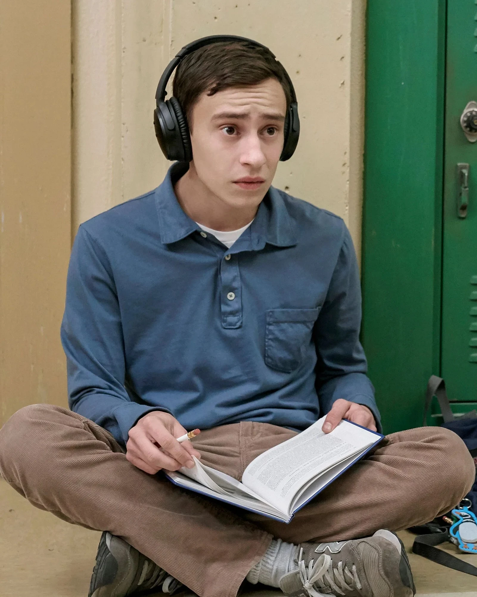
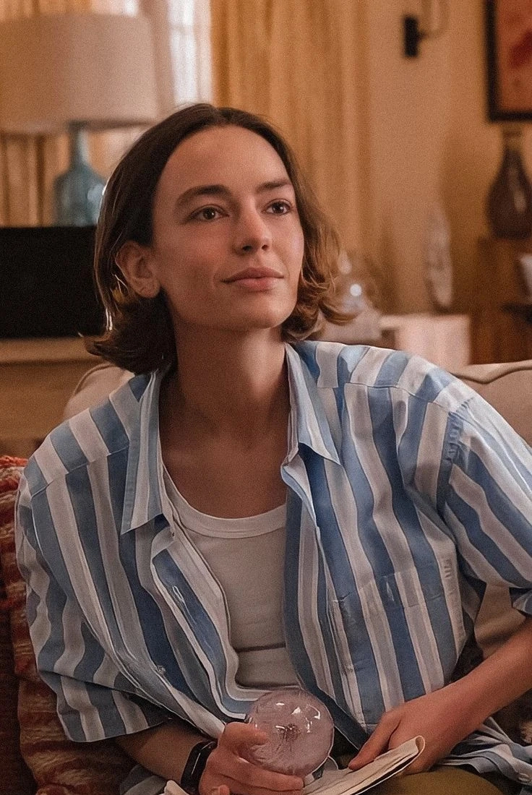
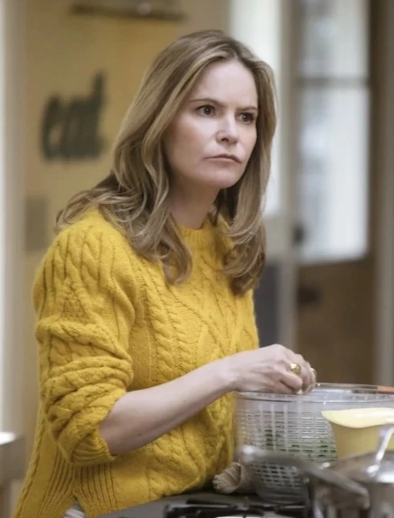
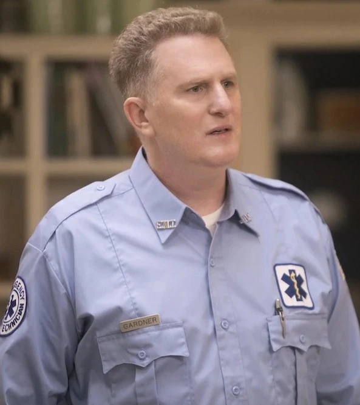
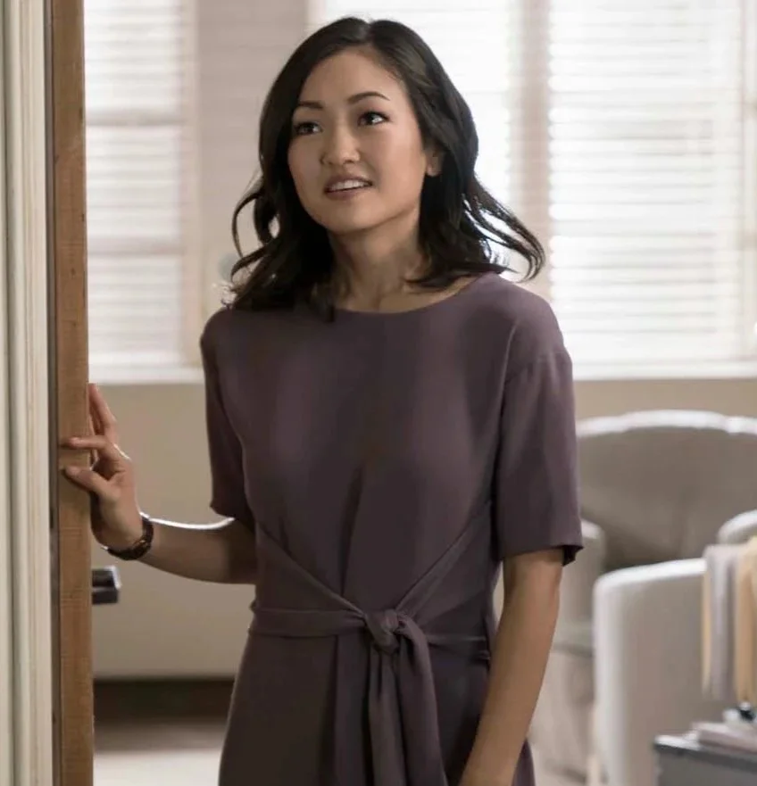
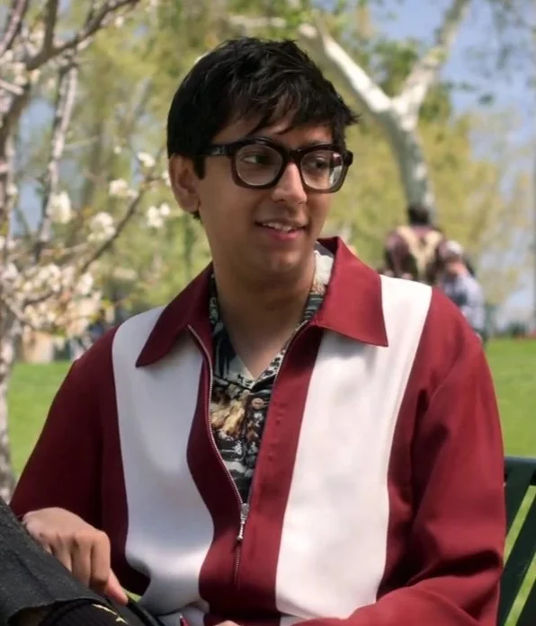

ATYPICAL
Atypical
Es una serie televisiva del género novela de aprendizaje, creada y escrita por Robia Rashid para Netflix. Se centra en la vida del chico de 18 años Sam Gardner, quien tiene un trastorno del espectro autista.
Para Sam, la vida es más complicada de lo que podamos imaginar. A pesar de tener un mejor amigo, el cual conoce del trabajo, en ocasiones se siente rechazado, sobre todo por las chicas.
Decide buscar novia, pero le es difícil porque lo ven "raro", ya que tiene determinadas manías y costumbres. Sam es aficionado a los pingüinos y a la Antártida.
REPARTO
-

Sam Gardner
Tiene 18 años y se encuentra dentro del espectro del autismo. Está obsesionado con todo lo relacionado a la Antártida. Mostrará sus pequeños y grandes avances para lograr autonomía e independencia.
-

Casey Gardner
Hermana menor de Sam. Sus preocupaciones son el atletismo y su hermano. Toda su vida parece moverse alrededor de estos ejes, pero, por suerte, también empezará a encontrar su lugar y su propia identidad.
-

Elsa Gardner
Madre de Sam. Sobreprotectora, ha dedicado toda su vida a sus hijos. El verlos crecer e independizarse significará para ella un cambio para el que no está preparada y pondrá en juego toda su vida cotidiana.
-

Doug Gardner
Padre de Sam. Es un padre buena onda, está siempre allí para alentar a sus hijos y para reducir algunas de sus penas cuando Elsa se pone estricta. Es un paramédico de buen corazón.
-

Julia Sasaki
La terapista de Sam es un personaje complejo. Si bien es muy buena en su trabajo, falla en darse cuenta de que Sam está locamente enamorado de ella. Para cuando se entera, las cosas ya se van a haber salido de control.
-

Zahid Raja
El mejor amigo de Sam. Trabajan juntos hace años en Techtropolis. En muchos aspectos, es la única conexión real de Sam con la adolescencia que está atravesando, aunque Zahid también es un tanto particular.
TEMPORADAS
-
Temporada 1 - Trailer
8 capítulos
Un adolescente con trastorno de espectro autista quiere tener novia y su búsqueda de independencia desencadena una aventura de autodescubrimiento para toda la familia.
-
Temporada 2 - Trailer
10 capítulos
Mientras Elsa y Doug enfrentan las consecuencias de la crisis matrimonial y Casey se adapta a la nueva escuela, Sam se prepara para la vida posgraduación.
-
Temporada 3 - Trailer
10 capítulos
Sam empieza el primer año de universidad y la vida de estudiante no le da respiro: más responsabilidades, más planes, más amigos, ¡más, más y más!
-
Temporada 4 - Trailer
10 capítulos
Cuando Casey y Sam están a punto de abandonar el nido, cada miembro de la familia Gardner debe tomar decisiones importantes sobre qué rumbo tomar.